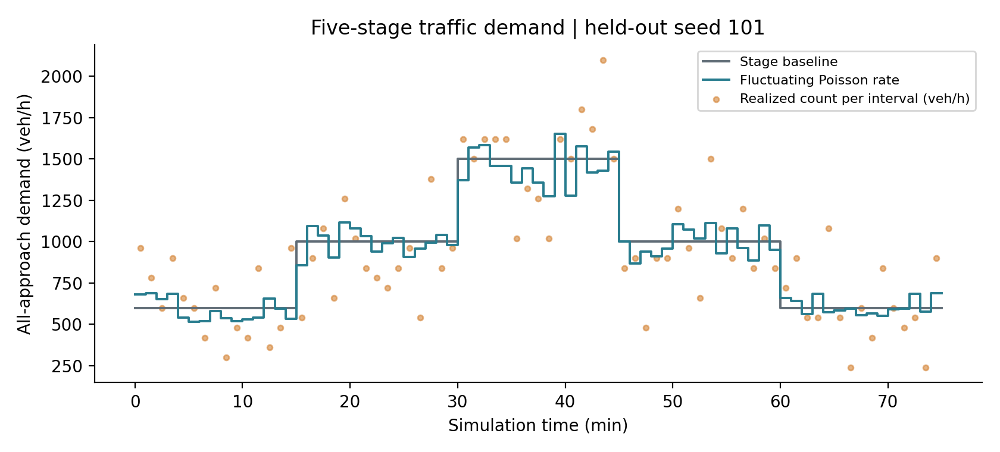
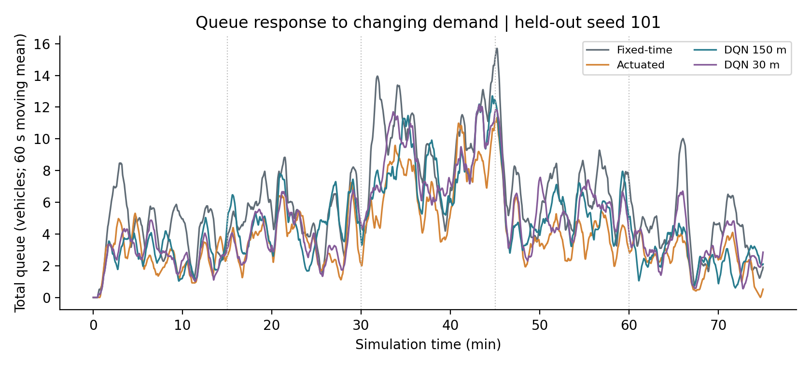
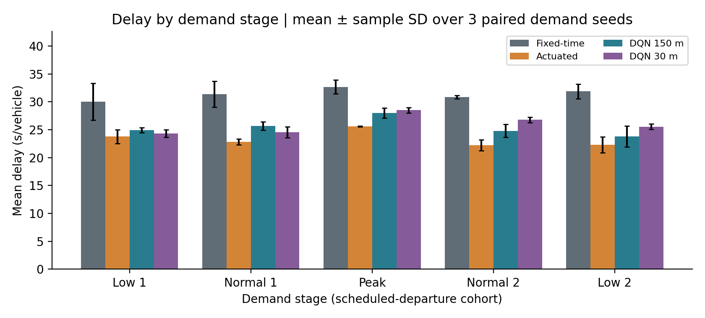
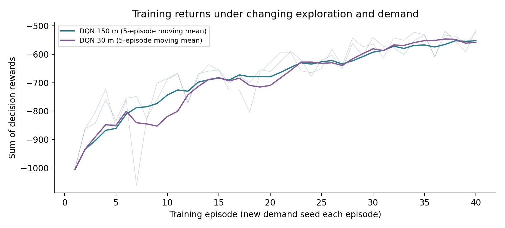
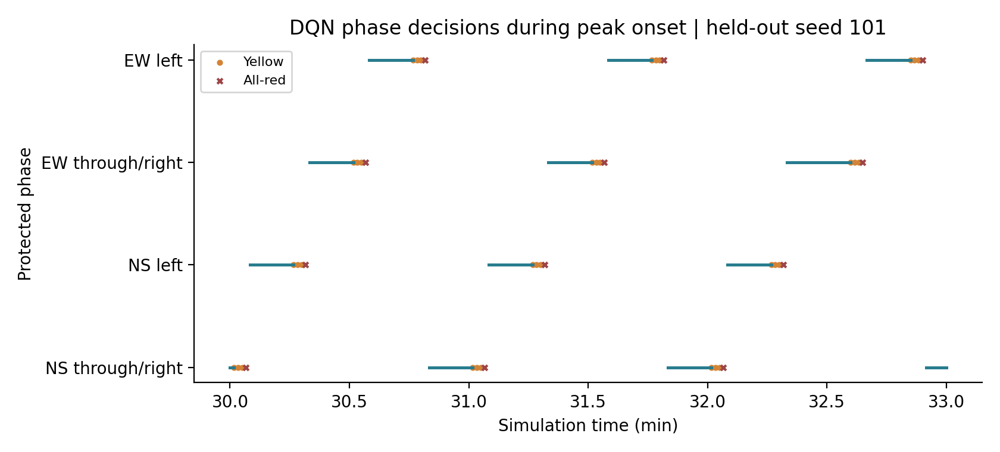
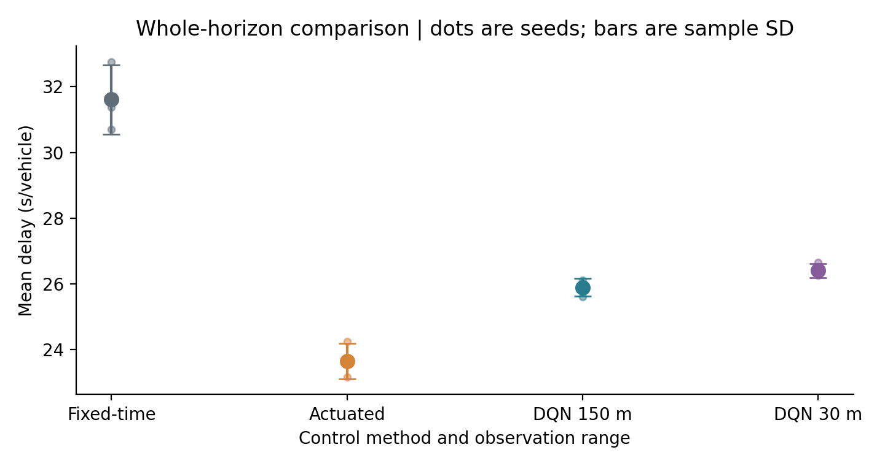

Python 与 SUMO 可复现实验 仿真数据
本作业建立四进口信号交叉口，通过 SUMO 车辆真值模拟路侧毫米波雷达在停车线上游 150 m 内的轨迹输出，并比较定时、感应和强化学习控制。所有车流、轨迹及评价结果均由本地程序实际生成；没有使用真实雷达采集记录，也没有执行雷达点云检测或目标跟踪。
每个交通阶段持续 15 min，五阶段共 75 min。参考需求为交叉口所有进口合计 600、1000、1500、1000、600 veh/h，东西各占 30%，南北各占 20%。这避免了将总需求误用为单进口需求而放大四倍的错误。
按每 60 s 更新到达强度，在基础流量上下 15% 内均匀波动。每个区间的车辆数服从泊松分布，条件于该数量的到达时间服从区间内均匀分布。左直右基础比例依次采用 15/70/15、20/65/15、25/60/15、20/65/15、15/70/15，各比例加入不超过 0.02 的扰动后归一化。
路口每个进口设右转、直行、左转三条专用车道；进口和出口边长约 320 m，道路速度上限为 13.89 m/s。四个保护相位按南北直右、南北左转、东西直右、东西左转循环，不设置行人、非机动车或红灯右转。
每 1 s 使用 TraCI 兼容接口订阅车辆编号、车道、距停车线距离、速度、加速度、连续等待时间和累计等待时间。默认采用同一 API 的 libsumo 进程内后端以加快训练，也支持纯 TraCI。检测范围以车辆前保险杠到进口车道末端的距离判定，每 15 m 划分一格，共 10 格。
完整状态共 296 维：12 车道 × 10 区段 × 车辆数及平均速度，12 车道 × 车辆数、排队数、累计等待时间及平均速度，4 维相位、3 维灯色模式和 1 维持续时间。无车区段速度设为零，各输入按固定尺度归一化。排队定义为速度不高于 0.1 m/s。累计等待时间记忆窗口显式扩展至整个仿真时长，避免使用 SUMO 默认 100 s 窗口而误认为终身累计。
采用 Double DQN，两个隐藏层分别为 128 和 64 个 ReLU 单元，输出保持当前相位和切换至下一相位两个动作。每 5 s 决策一次。安全状态机规定最短绿灯 10 s、最长绿灯 60 s、黄灯 3 s、全红 1 s；不满足最短绿灯时的切换请求不执行，最长绿灯到达后强制切换。
每秒奖励定义为 −(0.01 W + Q + 2 S)/10，其中 W 是检测区内车辆累计等待时间之和，Q 是检测区内排队车辆数，S 是该秒在检测区内新发生的停车次数。一个决策区间的奖励取各秒奖励的均值；训练累计奖励是全轮所有决策奖励之和。奖励中的 S 为增量，避免将过去停车次数在每一步重复惩罚。
定时控制四相位绿灯分别为 22、10、34、14 s，加入四组黄灯与全红后周期为 96 s，东西与南北总有效绿灯按 60/40 分配。感应控制在最短绿灯后检查当前放行流向 40 m 内是否有车，有车则延长，无车则结束，受相同最大绿灯限制。基准控制每秒判断以保持固定周期精确；DQN 每 5 s 判断。
DQN 使用 Adam 优化器，学习率 0.0003，折扣因子 0.99，回放容量 50000，批量 64，前 1000 步预热，每 2 个决策更新一次，每 250 次梯度更新同步目标网络。每种模型训练 40 轮，每轮使用不同需求种子，探索率从 1 逐渐降至 0.05，模型初始化种子为 7。使用最后一轮模型，未按测试表现选择检查点。
测试需求种子为 101, 102, 103，共 3 组。每组的路线文件及车辆随机种子在各控制方法间完全一致；测试种子与训练种子分离。跨方法进行配对比较，报告跨需求种子的均值和样本标准差。
车辆平均延误采用 SUMO tripinfo 的 timeLoss 加 departDelay，平均旅行时间采用 duration 加 departDelay，平均停车次数采用 waitingCount；车辆阶段按计划出发时间归属，避免按完成时间分组造成跨阶段选择偏差。排队均值和最大值以每秒全进口静止车辆总数统计，另报最远排队车辆距停车线的距离。通行量按车辆离开进口停车线的次数统计，非简单以到达出口的次数代替。
主窗口结束后最多追加 600 s 无新增需求的清空期，仅用于完成车辆的全程延误和旅行时间。排队与通行量仍只统计主窗口，清空期不混入。未完成车辆数为 0；若该值不为零，完成车辆均值可能有删失偏差，需要延长清空时间。共记录碰撞车辆事件 0 次、传送事件 0 次。
相对定时控制，150 m DQN 的平均延误降低 18.06%。
相对感应控制，150 m DQN 的平均延误增加 9.46%。
完整轨迹模型相对 30 m 模型的平均延误变化为 -1.91%。该消融比较采用相同模型结构、训练需求种子和训练轮数，近端模型的远端分区及远端统计量全部屏蔽。这属于单次模型初始化下的描述性结果，不能据此断言完整轨迹在所有流量和训练条件下均更优。
| 控制方法 | 平均延误 s/veh | 平均排队 veh | 最大排队 veh | 停车次数/veh | 旅行时间 s/veh | 窗口通行量 veh |
|---|---|---|---|---|---|---|
| 定时控制 | 31.61 ± 1.05 | 6.21 ± 0.42 | 22.33 ± 1.53 | 0.72 ± 0.02 | 77.72 ± 1.06 | 1158.67 ± 35.81 |
| 感应控制 | 23.66 ± 0.54 | 4.15 ± 0.24 | 19.33 ± 1.15 | 0.74 ± 0.00 | 69.77 ± 0.54 | 1161.33 ± 34.36 |
| 150 m 轨迹 Double DQN | 25.90 ± 0.27 | 4.74 ± 0.06 | 20.33 ± 0.58 | 0.73 ± 0.01 | 72.02 ± 0.26 | 1159.33 ± 34.39 |
| 30 m 近端信息 Double DQN | 26.40 ± 0.22 | 4.80 ± 0.08 | 21.33 ± 1.53 | 0.78 ± 0.02 | 72.52 ± 0.21 | 1160.00 ± 35.59 |
交通需求曲线同时给出阶段基础值、波动后的泊松强度和实际每分钟到达数。排队曲线采用 60 s 移动平均展示趋势，原始每秒值保留在 timeseries.csv。阶段延误图以计划出发车辆队列分组，误差线为需求种子间样本标准差。
transition_metrics.csv 分别记录高峰开始后 180 s 和高峰结束后 180 s 的平均及最大排队。高峰开始对应第 30 min，高峰消散对应第 45 min。应同时查看这两个时间窗和整段高峰，不宜仅凭一个全局均值判断响应速度。
训练奖励受需求实现、探索率和策略变化共同影响；奖励曲线改善仅表明该训练过程的回报变化，不能直接等同于已收敛或泛化性能。最终控制效果由独立测试确定。
高峰开始后 180 s的跨种子平均排队为：定时控制 9.59 veh；感应控制 6.45 veh；150 m 轨迹 Double DQN 7.87 veh；30 m 近端信息 Double DQN 7.63 veh。这是预先定义的时间窗指标，不能单独识别控制器反应时滞。
高峰结束后 180 s的跨种子平均排队为：定时控制 8.86 veh；感应控制 5.95 veh；150 m 轨迹 Double DQN 6.98 veh；30 m 近端信息 Double DQN 6.85 veh。这是预先定义的时间窗指标，不能单独识别控制器反应时滞。
150 m DQN 前五轮平均累计奖励为 -860.88，最后五轮为 -552.58。
当前路口几何、驾驶行为和雷达覆盖均为理想化设定，未包含漏检、误检、遮挡、多目标关联或车辆 ID 切换。位置和速度噪声接口已实现，默认实验噪声为零；默认不将未实际运行的噪声实验作为结果。
3 组需求种子可用于课程作业的初步重复实验，但本次每种 DQN 仅训练一个初始化种子，不能量化训练本身的方差，也不作统计显著性或工程部署结论。进一步研究应增加模型初始化种子、测试车流种子、入口不均衡程度和覆盖范围设置，并校准真实路口的饱和流率。
本次 DQN 未超过感应基准。感应控制每秒判断，而 DQN 每 5 s 判断，因此差异同时包含策略和决策频率的影响，不能全部归因于强化学习算法本身。相同安全约束并不意味着两者拥有完全相同的动作时机。
完整轨迹模型仅在全局平均延误上略优于近端模型，两个过渡时窗的平均排队反而略高，说明改善并非在所有阶段都成立。可能原因包括交通总需求偏低、最短绿灯限制、模型样本量、训练随机性及空间信息尚未被有效利用；现有实验不能区分这些机制。






| 控制方法 | 平均延误 s/veh | 平均排队 veh | 最大排队 veh | 停车次数/veh | 旅行时间 s/veh | 窗口通行量 veh |
|---|---|---|---|---|---|---|
| 定时控制 | 30.04 ± 3.27 | 3.78 ± 0.57 | 10.67 ± 1.53 | 0.68 ± 0.05 | 76.15 ± 3.27 | 142.33 ± 2.89 |
| 感应控制 | 23.78 ± 1.23 | 2.67 ± 0.15 | 9.67 ± 2.08 | 0.74 ± 0.04 | 69.87 ± 1.23 | 146.33 ± 0.58 |
| 150 m 轨迹 Double DQN | 24.93 ± 0.42 | 2.87 ± 0.09 | 10.33 ± 1.53 | 0.70 ± 0.02 | 71.04 ± 0.41 | 143.67 ± 1.53 |
| 30 m 近端信息 Double DQN | 24.34 ± 0.66 | 2.75 ± 0.03 | 9.33 ± 1.15 | 0.74 ± 0.03 | 70.45 ± 0.66 | 144.67 ± 2.31 |
| 控制方法 | 平均延误 s/veh | 平均排队 veh | 最大排队 veh | 停车次数/veh | 旅行时间 s/veh | 窗口通行量 veh |
|---|---|---|---|---|---|---|
| 定时控制 | 31.38 ± 2.33 | 6.08 ± 0.77 | 14.67 ± 2.08 | 0.71 ± 0.02 | 77.50 ± 2.37 | 231.33 ± 6.51 |
| 感应控制 | 22.83 ± 0.51 | 3.95 ± 0.28 | 13.33 ± 1.15 | 0.72 ± 0.02 | 68.95 ± 0.49 | 231.00 ± 11.79 |
| 150 m 轨迹 Double DQN | 25.67 ± 0.76 | 4.67 ± 0.07 | 14.33 ± 1.15 | 0.72 ± 0.02 | 71.80 ± 0.75 | 233.33 ± 11.02 |
| 30 m 近端信息 Double DQN | 24.53 ± 0.98 | 4.35 ± 0.36 | 13.67 ± 1.15 | 0.77 ± 0.03 | 70.66 ± 0.96 | 232.33 ± 9.50 |
| 控制方法 | 平均延误 s/veh | 平均排队 veh | 最大排队 veh | 停车次数/veh | 旅行时间 s/veh | 窗口通行量 veh |
|---|---|---|---|---|---|---|
| 定时控制 | 32.69 ± 1.25 | 10.27 ± 0.77 | 22.33 ± 1.53 | 0.73 ± 0.04 | 78.83 ± 1.23 | 371.33 ± 20.84 |
| 感应控制 | 25.62 ± 0.05 | 7.17 ± 0.51 | 19.00 ± 1.73 | 0.76 ± 0.01 | 71.73 ± 0.03 | 370.00 ± 17.00 |
| 150 m 轨迹 Double DQN | 28.04 ± 0.90 | 8.23 ± 0.23 | 20.00 ± 1.00 | 0.77 ± 0.03 | 74.18 ± 0.91 | 369.00 ± 19.52 |
| 30 m 近端信息 Double DQN | 28.50 ± 0.46 | 8.24 ± 0.61 | 21.33 ± 1.53 | 0.81 ± 0.01 | 74.62 ± 0.47 | 369.67 ± 18.15 |
| 控制方法 | 平均延误 s/veh | 平均排队 veh | 最大排队 veh | 停车次数/veh | 旅行时间 s/veh | 窗口通行量 veh |
|---|---|---|---|---|---|---|
| 定时控制 | 30.88 ± 0.29 | 6.75 ± 0.29 | 16.67 ± 3.06 | 0.73 ± 0.02 | 76.97 ± 0.29 | 259.67 ± 11.93 |
| 感应控制 | 22.26 ± 0.99 | 4.36 ± 0.37 | 15.67 ± 2.08 | 0.72 ± 0.02 | 68.35 ± 1.01 | 258.00 ± 7.55 |
| 150 m 轨迹 Double DQN | 24.82 ± 1.15 | 5.15 ± 0.09 | 17.33 ± 2.52 | 0.72 ± 0.03 | 70.92 ± 1.16 | 257.33 ± 13.65 |
| 30 m 近端信息 Double DQN | 26.79 ± 0.50 | 5.50 ± 0.30 | 14.67 ± 3.06 | 0.78 ± 0.04 | 72.90 ± 0.47 | 258.00 ± 5.57 |
| 控制方法 | 平均延误 s/veh | 平均排队 veh | 最大排队 veh | 停车次数/veh | 旅行时间 s/veh | 窗口通行量 veh |
|---|---|---|---|---|---|---|
| 定时控制 | 31.89 ± 1.33 | 4.19 ± 0.47 | 12.67 ± 3.79 | 0.75 ± 0.03 | 77.98 ± 1.37 | 154.00 ± 12.77 |
| 感应控制 | 22.31 ± 1.43 | 2.60 ± 0.32 | 9.67 ± 1.53 | 0.74 ± 0.06 | 68.42 ± 1.41 | 156.00 ± 9.85 |
| 150 m 轨迹 Double DQN | 23.80 ± 1.87 | 2.79 ± 0.30 | 10.00 ± 2.00 | 0.68 ± 0.06 | 69.86 ± 1.85 | 156.00 ± 9.54 |
| 30 m 近端信息 Double DQN | 25.56 ± 0.47 | 3.16 ± 0.06 | 11.33 ± 1.53 | 0.77 ± 0.01 | 71.64 ± 0.43 | 155.33 ± 10.21 |
作业任务来源于用户提供的要求文档。方法和指标定义参见以下一手资料；本文未将作业文档的参考文献列表视作已逐篇核验的证据。
原始数据：data/seed_*/demand.csv 与 vehicles.csv；雷达轨迹：evaluation/*/seed_101/radar_trajectories.csv.gz；每秒状态统计：evaluation/*/seed_*/timeseries.csv；逐车评价：vehicle_metrics.csv；汇总：summary.csv；配对比较：paired_comparisons.csv；模型：models/*.pt。